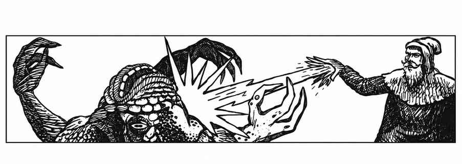
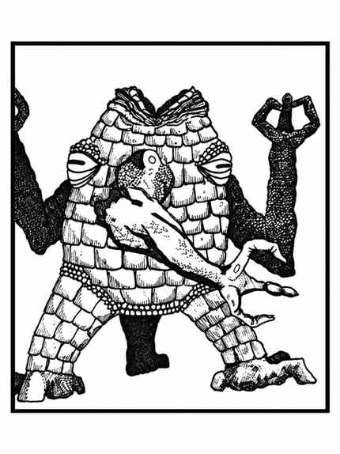

岩石兽 · Xorn

 |
|
岩石兽来自土元素位面，偶尔来到物质位面，并在地下深处寻找稀有矿物。岩石兽的下颚极其强大，外形、颜色和构造都能与石头融为一体，因此很容易突袭其他生物；它能在 20 尺外嗅到铜、银等金属，若路过者拒绝交出金属，90% 概率会强行夺取。
岩石兽不受火焰或寒冷法术伤害；闪电等电击攻击依豁免结果造成一半或无伤害。移土术会把它击退 3 寸并使其昏迷一轮；石化为肉术或化石为泥术会将其护甲降至 8，持续一轮，且期间无法调整分子结构攻击；穿墙术造成 11–20 点伤害。若战斗不利，岩石兽会停止战斗，调整分子结构并穿过最近的石头（通常是地面）逃走；一轮后可在实心石、泥土等物质中以正常速度移动。处于此状态时若被相位门术命中，会立即死亡。